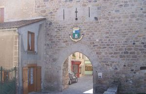
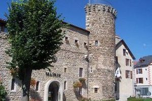
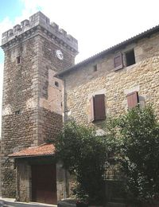
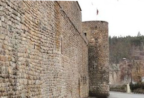
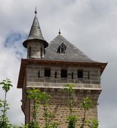
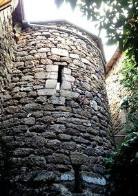
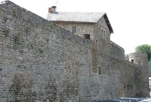
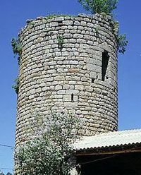

Recensement Jean-Claude Truffet
| Département | 48 — Lozère |
| Canton | Saint-Alban sur Limagnolle |
| Commune | Le Malzieu |
| Type d'édifice | Patrimoine |
| Période d'origine | XII |








Plusieurs éléments du patrimoine a le Malzieu, le château des Mercoeur et de Crussols. MALZIEU, est village fortifié dont l'édification des remparts survint au Moyen-Age, période durant laquelle la cité devient place forte et ville judiciaire, il reste des traces, au moins dans les coutumes locales, d'une bataille qui aurait eu lieu contre les Sarrazins au VIIIe siècle. En effet, le « pré des Sarrazins », situé sous le village de Verdezun, attesterait de ce combat. Il y aussi le chemin des "Espagnols". En 1055, le Malzieu devient la propriété des barons de Mercur, l'une des huit baronnies du Gévaudan. En 1307, l'évêque de Mende, Guillaume VI Durand, conclut avec le roi de France l'acte de paréage. Les Mercur ayant principalement leurs possessions en Auvergne, qui sont rattachés à la cour de Riom et au parlement de Paris, alors que le reste du Gévaudan est dépendant de la cour et du parlement de Toulouse. Cet acte partagé en trois le territoire du Gévaudan, la terre du Roi, la terre de l'évêque et la terre commune (administrée également par les barons). Le 7 août 1586, son armée a détruit la partie qui est de nos jours tournée vers le Pont de la Truyère. En 1632 après une épidémie de peste, la baronnie des Mercoeur qui échut aux Bourbons en 1643 et revient à la couronne de France en 1778.
Malzieu au Moyen-Age possédait sept tours qui étaient reliées entre elles par des remparts :
la tour de Mercur (en 1739, elle est désignée « Tour de Jaumes ») située au nord-ouest, est fortement abaissée et recouverte d'un toit ;
la tour de Jonas, est emportée le 27 août 1656 par une crue du Galastre, les ponts sont tous noyés, la tour ne sera jamais reconstruite faute de moyens.
la tour de Bodon à l'est, elle est la tour la mieux conservée, elle abrite l'office de Tourisme.
la tour de Crussols, de nos jours il n'en reste que de minces traces ;
la tour de Thaler est située au nord-ouest au côté du trou de Merle, écrêtée mais conservée.
la tour de la Communauté, détruite par les troupes de Joyeuse.
la tour de Tourlande, détruite par les troupes de Joyeuse.
Il y avait aussi trois autres tours qui à l'intérieur des remparts étaient censées former le château, l'une d'entre elles était la tour de Baude, celle-ci est la seule qui reste du château.
Une autre tour est le beffroi, qui porte l'horloge. Il servit autrefois de prison.
Barons de Mercur"
Patrimoine à Malzieu, tour de baude, de Thaler, des forains des ducs et la tour de Bodon à st-Leger de Malzieu